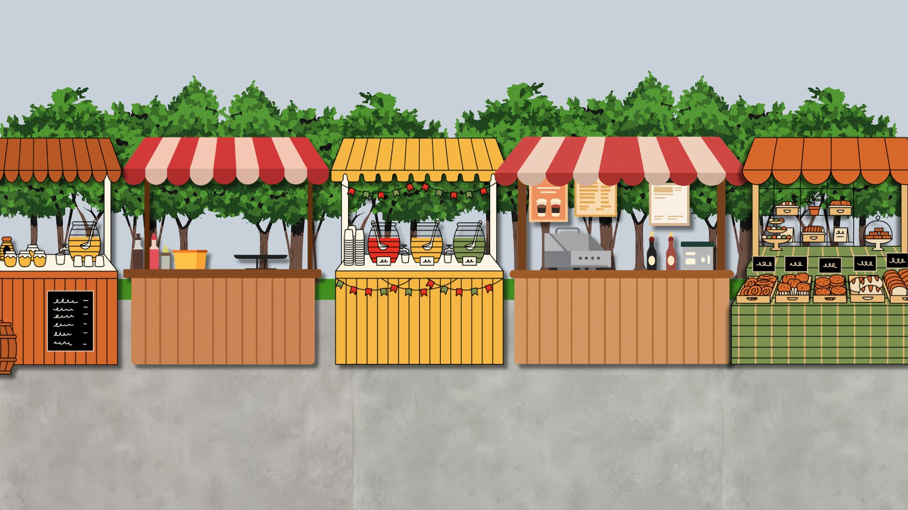

Start early
Noodle stalls open at sunrise and sell out by ten, so begin with a warm bowl.
Town Food Trail is a student-made guide to the small kitchens, night stalls and sweet corners that locals actually line up for. Follow the route from morning noodles to late-night grilled skewers.
See the trail
Noodle stalls open at sunrise and sell out by ten, so begin with a warm bowl.
Every stop on the route is within a ten minute walk of the next one.
Order small and split with friends so you can taste more places.